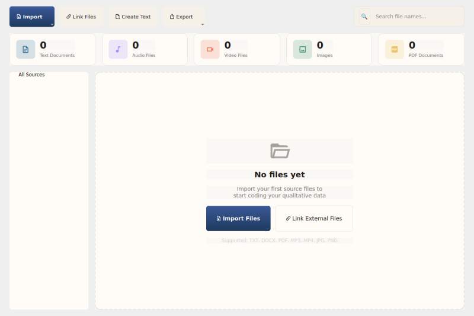

Import & Export¶
QualCoder supports importing and exporting project data in multiple formats for interoperability with other QDA tools and for sharing your work.
Accessing Import/Export¶
All import and export operations are available from the File Manager toolbar:
- Import button dropdown: Import source files, code lists, survey CSV, REFI-QDA, and RQDA projects
- Export button dropdown: Export selected sources, codebooks, coded HTML, and REFI-QDA projects

The Import dropdown showing all available import formats.

The Export dropdown showing all available export formats.
Export Formats¶
Export Codebook (.txt)¶
Export your codebook as a plain text file with codes organized by category.
- Click Export > Codebook (.txt)...
- Choose a save location
- Click Save
The codebook includes code names, colors (as hex values), and category groupings.
Export Coded HTML (.html)¶
Export coded text as an HTML file with color-highlighted segments.
- Click Export > Coded HTML (.html)...
- Choose a save location
- Click Save
Each coded segment is highlighted with its code's color. Hover over a highlight to see the code name.
Export REFI-QDA Project (.qdpx)¶
Export the entire project in REFI-QDA format for interoperability with NVivo, ATLAS.ti, MAXQDA, and other tools that support the standard.
- Click Export > REFI-QDA Project (.qdpx)...
- Choose a save location
- Click Save
The .qdpx file is a ZIP archive containing:
- project.qde — XML with codes, categories, sources, and coded segments
- Sources/ — Embedded source files
Import Formats¶
Import Code List (.txt)¶
Import a list of codes from a plain text file. Each line becomes a code. Indented lines (tabs or spaces) are placed under the preceding category.
- Click Import > Code List (.txt)...
- Select the text file
- Click Open
Format example:
Import Survey CSV (.csv)¶
Import survey data as cases with attributes. Each row becomes a case.
- Click Import > Survey CSV (.csv)...
- Select the CSV file
- Click Open
The first column is used as the case name by default. All other columns become case attributes.
Import REFI-QDA Project (.qdpx)¶
Import a project exported from another QDA tool in REFI-QDA format.
- Click Import > REFI-QDA Project (.qdpx)...
- Select the
.qdpxfile - Click Open
Codes, categories, sources, and coded segments are imported. Existing data is preserved.
Import RQDA Project (.rqda)¶
Import a project from RQDA (R package for Qualitative Data Analysis).
- Click Import > RQDA Project (.rqda)...
- Select the
.rqdafile - Click Open
Active codes, sources, coded segments, and categories are imported. Deleted items (status != 1) are skipped.